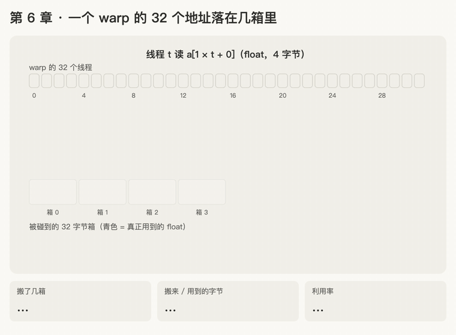
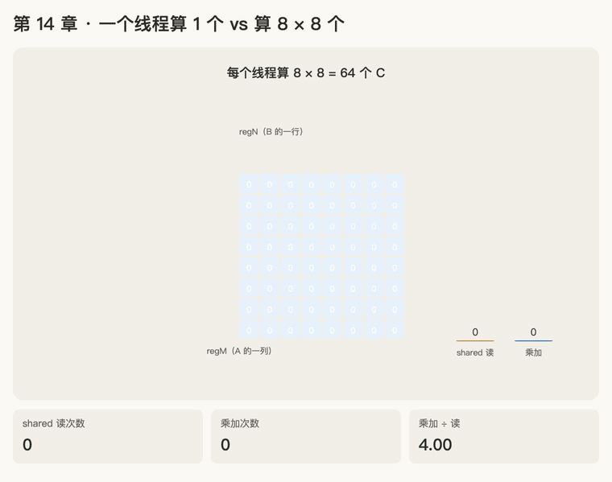

CUDA 从线程到 Tensor Core · 讲义目录
27 章 · 27 个动画（GIF + 可交互页面）· 27 本 notebook · 64 张复习卡片 · 覆盖 study-plan 阶段 1–12（含 9.5）的理论部分；每章的数字都用
solutions/chapter-code/的代码算过、测试核对过
这本书讲什么
从"一个 for 循环怎么交给成千上万个线程"讲起，一步步走到 2026 年 AI kernel 的前沿：线程层级、warp、内存层级、合并访存、bank conflict、occupancy、roofline；归约、shuffle、scan；从 naive 到 94% cuBLAS 的 SGEMM；Tensor Core 四代指令；Ampere 异步拷贝、Hopper 的 TMA / wgmma / warp specialization、CuTe、Blackwell 的 TMEM 与块缩放低精度；online softmax、FlashAttention 1–4、推理 kernel；最后是 Tile 模型与各种 DSL、编译部署、CUDA Graphs / PDL，以及一套优化方法论。
- 适合谁：会写 C / C++ 或 Python、想看懂并亲手写 GPU kernel 的人。不需要事先懂硬件；要用到的数学只有向上取整、最大公约数、指数函数。
- 读完能做什么：读懂 Programming Guide、Boehm / Pranjal 的 GEMM worklog、Colfax 的 CUTLASS 教程、FlashAttention 2/3/4 论文；按 study-plan 的里程碑 M0–M11 动手写 kernel；拿到一个慢 kernel 知道先查什么。
- 怎么读：按章顺序读。每章先看讲解和动画，再自己做练习，最后用复习卡片隔几天考自己。第 1–12 章在 Mac 上就能配合 cubecl-lab 练；第 13 章以后的动手部分需要云 GPU（study-plan 标了最低卡型）。
讲解的特点
- 一次一小步：每个概念按"白话类比 → 代码 / 公式 → 小数字亲手算一遍"讲，算例全部由
chapter-code的测试核对。 - 几条主线贯穿全书：考场与教室（线程编号）、32 个窗口的食堂（bank）、洗衣房（延迟隐藏）、Boehm 的 A6000 SGEMM 表（第 13–14 章）、Pranjal 的 H100 GEMM 表（第 18 章）、online softmax 的 (m, ℓ)（第 21–23 章反复出现）。
- 每章一个动画：关键原理做成可交互页面，▶ 播放、→ 单步、↺ 从头开始，开关切换不同情形；GIF 版直接嵌在正文里。
- 对照原文：讲到 Programming Guide、Best Practices、PTX ISA、论文、博客的地方都标了本地文本的章节号和行号（如 PG §2.3.4.1，
text/cuda-programming-guide.txt第 3743 行），没有本地文本的标〔旧知〕。 - 术语不设门槛：缩写第一次出现就给英文全称并逐词解释，全书缩写见 缩写与术语表。
- 每章都有代码对照：Mac 上没有 NVIDIA GPU，所以每章附录用 NumPy 在 CPU 上模拟同样的规则（线程编号、32 字节一箱、32 个 bank、片段布局、流水线时间线、mbarrier 记账……），把讲义里的数字算一遍，配测试核对、配 notebook 一格一格跑；需要真 GPU 才能看到的部分标
[GPU]。只算讲过的例子，不提前给练习答案。 - 每章收尾有口诀，全部口诀汇总在本页末尾。
示例动画
 第 7 章 · bank conflict 按列读 32 路冲突，每行多放一个就散开 讲义 · ▶ 交互 |
 第 18 章 · warp specialization 生产者搬、消费者算，full / empty 两盏灯 讲义 · ▶ 交互 |
 第 22 章 · FlashAttention 一个 Q 块扫过 K、V，S 用完即丢 讲义 · ▶ 交互 |
 第 6 章 · 合并访存 32 个地址落在几箱：相邻读 4 箱，跨步读一人一箱 讲义 · ▶ 交互 |
 第 14 章 · 寄存器分块 读一列 A、一行 B，外积出一个小方块 讲义 · ▶ 交互 |
 第 21 章 · online softmax 边读边改账：遇到更大的数，旧账乘 e 的差 讲义 · ▶ 交互 |
全部动画见 动画目录。
其他入口
- 复习卡片：../review.md（C01–C64，按间隔规则复习）
- 代码对照与 notebook：../../solutions/chapter-code/（27 个模块、27 本 notebook，
uv run pytest核对全部章节） - 缩写与术语表：appendix-glossary.md
- 学习计划与里程碑：../study-plan.md
- 资料与优化方案调研：../04-resources-and-optimization-survey.md；Rust 与 C++ 选型：../03-rust-vs-cpp.md
全流程总览
目标：让 GPU 把一个矩阵乘 \(C = AB\) 算到接近硬件上限——全书大部分章节都是这条路上的一步；后面的 attention、推理 kernel 用的是同样几招。
CPU 的三重循环：C[x][y] += A[x][i] · B[i][y]
│ 只写循环体，一个线程算一个 C[x][y]：i = blockIdx × blockDim + threadIdx 第 1 章
▼
grid → block → warp：block 一波一波派到 SM，warp 32 人一个口令 第 2、3 章
│ host：分配、拷进、启动、同步、拷回、查错 第 4 章
▼
① 先判断：算术强度 vs 脊点 → GEMM 是 compute-bound，归约是 memory-bound 第 9 章
② 读对显存：threadIdx.x 对最后一维，32 字节一箱合并 第 5、6 章（Kernel 2）
③ 读一次用多次：tile 搬进 shared，两道 __syncthreads，躲开 bank conflict 第 7、13 章（Kernel 3）
④ 再上一层：寄存器分块、外积、float4、warptiling；occupancy 低也能藏延迟 第 8、14 章（Kernel 4–10）
⑤ 换计算单元：Tensor Core（mma.sync、ldmatrix、swizzle） 第 15 章
⑥ 搬和算重叠：cp.async 流水线 → TMA + mbarrier → wgmma + warp 专业化 → TMEM 第 16–20 章（CuTe 第 19 章）
⑦ 中间结果不落地：online softmax → FlashAttention → 推理 kernel 第 21–23 章
⑧ 落地：选 DSL、编译部署、Graph / PDL 去空隙、对拍和计时 第 24–27 章
▼
接近 SOL 的 kernel（A6000 SGEMM 达到 cuBLAS 的 94%；H100 BF16 GEMM 764 TFLOP/s）
旁支：memory-bound 的运算（求和、softmax、norm）靠归约、shuffle、scan 第 10–12 章
| 步 | 做什么 | 为什么这样做 |
|---|---|---|
| 写 kernel | 只写循环体，每个线程用全局编号认领一份活；host 向上取整、kernel 越界检查 | GPU 一次叫来成千上万个线程，每人跑同一份代码 |
| 分层执行 | block 互不依赖、按波派到 SM；SM 把 block 切成 warp | 换多少个 SM 都对；warp 是真正的执行单位，分岔只在 warp 里 |
| ① 判断瓶颈 | 算 FLOP ÷ 字节，和脊点比 | 低于脊点看带宽、高于脊点看算力，手段完全不同 |
| ② 合并访存 | 相邻线程读相邻地址 | 显存按 32 字节一箱发货，乱读会搬回大量用不到的字节 |
| ③ shared 分块 | 一块数据从显存读一次，在片上被 32 个线程用 | naive GEMM 每个数被读 4096 次 |
| ④ 寄存器分块 | 每个线程算一个小方块，读的是边、算的是面积 | shared 也有带宽和指令开销 |
| ⑤ Tensor Core | 一个 warp 一条指令做一个小矩阵乘 | 比 CUDA core 快一个数量级 |
| ⑥ 异步与专业化 | 搬下一块时算这一块；搬运组只搬、计算组只算 | 流水线把快的那一步藏起来，让 Tensor Core 不停 |
| ⑦ 融合 | 几个运算放进一个 kernel，中间结果留在片上 | memory-bound 的时间就是读写次数 |
| ⑧ 落地 | 先用 DSL 写对，再编译分发、消掉启动空隙，按规范计时、和光速比 | 写对、测准、能部署，"快"才有意义 |
全书地图
第 1–4 章 编程模型（阶段 1）
只写循环体 → grid / block / thread 与全局编号 → block 互不依赖、按波调度
→ warp 与 SIMT、分岔 → host / device 五步、异步启动、查错
第 5–9 章 内存与性能分析（阶段 2）
寄存器 / shared / L1 / L2 / 显存 → 合并访存（32 字节一箱）→ bank conflict 与 padding
→ occupancy 与延迟隐藏（TLP / ILP）→ roofline、正确计时、Nsight
第 10–12 章 并行原语（阶段 3）
树形归约、grid-stride → warp shuffle、四层归约、原子 → scan（Hillis–Steele / Blelloch）
第 13–15 章 GEMM 与 Tensor Core（阶段 4–5）
naive → 合并 → shared 分块 → 寄存器分块（外积）→ 向量化 → warptiling（1.3% → 94%）
→ WMMA / mma.sync / ldmatrix / swizzle
第 16–20 章 新架构（阶段 6–8）
cp.async 与多级流水线 → TMA + mbarrier + cluster → wgmma + warp specialization + persistent
→ CuTe layout 代数 → Blackwell：TMEM、单线程 MMA、2-SM、NVFP4
第 21–23 章 融合与 LLM kernel（阶段 9–9.5）
online softmax 与算子融合 → FlashAttention 1–4 → decode：paged KV、split-KV、MLA、megakernel
第 24–27 章 工具与生产（阶段 10–12）
Tile 模型与 DSL 选型 → PTX / cubin / fatbin、NVRTC、Rust host → streams / Graphs / PDL
→ 优化方法论、AI 写 kernel 的坑、接下来做 M0–M11
目录
每章都配一个动画：GIF 在讲义正文里直接播放，▶ 交互是可以点按钮的页面（本地看需要起服务，见 动画目录"跑起来看"）。
| 章 | 阶段 | 主题 | 一句话精要 | 动画 | 卡片 | 状态 |
|---|---|---|---|---|---|---|
| 1 | 1 | 线程层级与全局编号 | 只写循环体，一人领一个；向上取整 + 越界检查 | GIF · ▶ | C01–C03 | 已讲，练习待作答 |
| 2 | 1 | block 调度与波 | block 之间不许等；最后一波不满是尾巴 | GIF · ▶ | C04–C05 | 正文完成，练习待做 |
| 3 | 1 | warp 与 SIMT | 32 人一个口令；分岔只在 warp 里 | GIF · ▶ | C06–C08 | 正文完成，练习待做 |
| 4 | 1 | 完整程序：分配、拷贝、启动、同步、查错 | 启动是下单不是等饭；错误会晚到 | GIF · ▶ | C09–C10 | 正文完成，练习待做 |
| 5 | 2 | 内存层级 | 越近越快越小；local 不在本地 | GIF · ▶ | C11–C12 | 正文完成，练习待做 |
| 6 | 2 | 合并访存 | 32 字节一箱；跨步 s 利用率 1/s | GIF · ▶ | C13–C14 | 正文完成，练习待做 |
| 7 | 2 | shared memory 与 bank conflict | 冲突路数 = gcd(跨步, 32)；[32][33] 散开 | GIF · ▶ | C15–C17 | 正文完成，练习待做 |
| 8 | 2 | occupancy 与延迟隐藏 | 四道门槛看最紧；不是越高越好 | GIF · ▶ | C18–C19 | 正文完成，练习待做 |
| 9 | 2 | roofline、计时、Nsight | 低于脊点看带宽，高于脊点看算力 | GIF · ▶ | C20–C22 | 正文完成，练习待做 |
| 10 | 3 | 归约 | 前一半加后一半；先 grid-stride 再淘汰赛 | GIF · ▶ | C23–C24 | 正文完成，练习待做 |
| 11 | 3 | warp shuffle 与原子操作 | 32 个数 5 步加完；原子不丢账但排队 | GIF · ▶ | C25–C27 | 正文完成，练习待做 |
| 12 | 3 | 前缀和 scan | Hillis–Steele 看远一倍；Blelloch 上树下树 | GIF · ▶ | C28–C29 | 正文完成，练习待做 |
| 13 | 4 | SGEMM ①：合并与 shared 分块 | 一个数被读几千次，搬进 shared 用 32 次 | GIF · ▶ | C30–C31 | 正文完成，练习待做 |
| 14 | 4 | SGEMM ②：寄存器分块、向量化、warptiling | 读的是边、算的是面积；13% → 94% | GIF · ▶ | C32–C33 | 正文完成，练习待做 |
| 15 | 5 | Tensor Core：WMMA、mma.sync、ldmatrix | 一个 warp 一条指令做一个小矩阵乘 | GIF · ▶ | C34–C36 | 正文完成，练习待做 |
| 16 | 6 | 异步拷贝与多级流水线 | 搬这块时算上块；慢的那步决定总时间 | GIF · ▶ | C37–C38 | 正文完成，练习待做 |
| 17 | 6 | Hopper ①：TMA、mbarrier、cluster | 一个线程搬整块；按字节记账 | GIF · ▶ | C39–C41 | 正文完成，练习待做 |
| 18 | 6 | Hopper ②：wgmma、warp specialization、persistent | 搬运组只搬、计算组只算；常驻 132 个 block | GIF · ▶ | C42–C44 | 正文完成，练习待做 |
| 19 | 7 | CuTe layout | Layout = Shape : Stride；换卡只换 Atom | GIF · ▶ | C45–C46 | 正文完成，练习待做 |
| 20 | 8 | Blackwell：tcgen05、TMEM、块缩放 | 累加器搬进 TMEM，一个线程发 MMA | GIF · ▶ | C47–C49 | 正文完成，练习待做 |
| 21 | 9 | online softmax 与算子融合 | 边读边改账；中间结果别落地 | GIF · ▶ | C50–C51 | 正文完成，练习待做 |
| 22 | 9 | FlashAttention 1–4 | 分块 + online softmax；每代硬件换瓶颈 | GIF · ▶ | C52–C53 | 正文完成，练习待做 |
| 23 | 9.5 | 推理 kernel | decode 强度 ≈ batch；分页、分段、合并 | GIF · ▶ | C54–C55 | 正文完成，练习待做 |
| 24 | 10 | Tile 模型与 DSL | 替 block 想而不是替线程想；先 Triton 写对 | GIF · ▶ | C56–C57 | 正文完成，练习待做 |
| 25 | 11 | 编译与部署 | PTX 给未来、cubin 给现在；C++ kernel + Rust host | GIF · ▶ | C58–C59 | 正文完成，练习待做 |
| 26 | 12 | streams、CUDA Graphs、PDL | Graph 省 CPU 下单，PDL 省 GPU 空隙 | GIF · ▶ | C60–C62 | 正文完成，练习待做 |
| 27 | 12 | 实战方法论与收尾 | 少搬、多用、边搬边算 | GIF · ▶ | C63–C64 | 正文完成，练习待做 |


口诀汇总
只写循环体，一人领一个；
学校分教室，教室分座位：grid 套 block，block 套 thread；
准考证号 = 教室号 × 每间座位数 + 座位号；
人数向上取整，多的人举手不答题（if (i < n)）。
block 是工单，SM 是车间，谁空派给谁，顺序不保证；
派了就做完，中途不换车间；
block 之间不许等，要交换就拆 kernel、用原子、上 cluster；
一次跑满叫一波，最后一波不满是尾巴，block 数要是 SM 数的好几倍。
32 人一个班，班长喊一个口令，大家做同一个动作（SIMT）；
分岔了就分两趟喊，不走这条路的原地等；
分岔只在 warp 里，按 warp 分组就不浪费；
block 取 32 的倍数，别让最后一班坐不满；
Volta 以后不再保证齐步走，要同步就写__syncwarp()。
两个仓库一条窄路：能不搬就不搬，搬了就多干几道；
五步走：分配、拷进、启动、同步、拷回（最后释放）；
启动是下单不是等饭，要结果先同步，计时也先同步；
尖括号不报错，启动后查cudaGetLastError；kernel 里的错会晚到，查不清就上 compute-sanitizer。
手里、台面、小冰箱、大冷库、城外仓库：越往外越大越慢；
寄存器编译器管，shared 自己管，L1 / L2 硬件管，显存怎么读你来管；
local 不在本地，在显存里，数组下标别用变量；
优化一句话：读一次，用很多次。
显存按箱发货，一箱 32 字节；
warp 一起下单，同箱只运一次；
相邻线程读相邻地址：4 箱满载；跨步 s：利用率 1/s；隔 32 字节以上：一人一箱，八分之一；
threadIdx.x 对最后一维；转置靠 shared 中转；一次读 float4，指令省四倍。
第 7 章 · shared memory 与 bank conflict
shared 是 block 的公共台面，写完要等、读完再覆盖也要等；
__syncthreads()要全员到场，别写在 if 里；
32 个窗口轮着排，字地址模 32 就是窗口号；
同窗不同菜要排队，同窗同菜一起打；冲突路数 = gcd(跨步, 32)，奇数跨步不冲突；
按列读二维数组冲突 32 路，每行多放一个就散开。
等的时候换人干：warp 切换不花钱，多养几个 warp 轮流等；
occupancy = 驻留 warp ÷ 最多 warp；
四道门槛看最紧：线程、block 数、寄存器、shared；
太低一定慢，太高不一定快：一个线程多件事在路上（ILP）也能藏延迟。
先分三类：算不过来、搬不过来、GPU 在闲着；
算术强度 = FLOP ÷ 字节，脊点 = 算力 ÷ 带宽；低于脊点看带宽，高于脊点看算力；
计时用 event，先预热，取中位数，小输入清 L2；
先 nsys 看全局，再 ncu 看单个：SOL 两个数，warp 在等什么。
能结合就能并行，浮点不严格结合，对拍要容差；
淘汰赛：N 个数 log N 轮；
前一半加后一半：不分岔、不冲突；相邻两两加：又分岔又冲突；
block 之间不能等：要么两个 kernel，要么原子加；
先在寄存器里多加几个（grid-stride），再进 shared 打淘汰赛。
同一个 warp 直接递纸条，不过讲台、不用全班等；
down 往大号拿，up 往小号拿，xor 找二进制伙伴，sync 指名道姓；
32 个数 5 步加完：16、8、4、2、1；
归约四层：线程里多加，warp 里 shuffle，block 里 shared，全局原子加；
原子不丢账但要排队：一个 block 一次可以，一个线程一次太慢。
scan：每个位置要前面所有数的和；inclusive 带自己，exclusive 不带；
Hillis–Steele 每轮看远一倍：log N 轮，N log N 次加，适合 warp 里；
Blelloch 先上树后下树：2 log N 轮，2N 次加，省工作量；
读完再写，两道栅栏；
跨 block：三段式最稳，单趟靠原子发号 + 往回看，生产用 CUB。
一人一格做点积：每算 2 次读 8 字节，1% 峰值；
threadIdx.x 对列：A 广播、B 合并，快 6 倍；
一个数被读几千次，搬进 shared 用 32 次；
搬、等、算、等：写完要等，读完再覆盖也要等；
瓶颈从显存挪到 shared，下一步搬进寄存器。
每一层都分块：显存到 shared 一次，shared 到寄存器一次；
一人算一格读两次，一人算一方块读一圈：读的是边，算的是面积；
外积：读一列 A、一行 B，乘出一个小方块；
读宽一点（float4、LDS.128），参数自动调，换卡就重调；
中间加一层 warp tile，正好接上 Tensor Core。
Tensor Core 一条指令做一个小矩阵乘，一个 warp 一起干；
低精度进、FP32 累加，比 CUDA core 快一个数量级；
fragment 把小矩阵拆进 32 个线程的寄存器：WMMA 不告诉你谁拿哪个，mma.sync 写在 PTX 里；
ldmatrix 一条指令按布局搬进寄存器，swizzle 让它不撞 bank；
一代比一代大：warp → warpgroup → 单线程发起，同步 → 异步。
搬完再算两头闲，搬这块时算上块；
cp.async 下单直送台面：不经寄存器、发了就走，搬完只告诉自己，别人要看还得同步；
双缓冲两份台面轮着用，多级流水多几块在路上；
流水线只能藏起快的那一步，慢的那一步决定总时间；
barrier 有相位：先报到、做别的、再等。
TMA 是专职搬运工：一张仓库地图（tensor map），一个线程一条指令搬整块，越界自动补零；
mbarrier 按人头也按字节记账：expect_tx 先报数，搬完自动扣，清零翻相位；
cluster 把相邻 block 绑一组：同时上岗、能互相等、能翻对方的台面（DSMEM）；
multicast 一次读、几家同时收。
wgmma：四个 warp 一起、一条指令一大块、B 直接从 shared 读、发了就走；
分工：搬运组只发 TMA，计算组只做 wgmma；
环形传送带两盏灯：full 亮了消费者拿，empty 亮了生产者装；
寄存器劫贫济富：搬运组只留 24 个，计算组拿 240 个；
常驻 132 个 block 循环干：store 时就搬下一块，tile 排好顺序吃 L2。
下标都是坐标点乘步长：Layout = Shape : Stride；
不写步长默认左边快（列优先），和 C 数组反着来；
形状能嵌套，一维也能拆两半；
分块是除法，铺满是乘法，重排是复合，swizzle 也是一个 layout；
Tensor = 指针 + Layout；硬件指令包成 Atom，换卡只换 Atom。
Blackwell 不认 wgmma，换成 tcgen05；
累加器搬进 TMEM：128 行 512 列，按列申请、用完归还，只能 ld 出来再加工；
一个线程发 MMA，搬运一个线程、计算一个线程，其余线程做收尾；
两个 SM 拼成一对，M 能到 256；
低精度靠分块缩放：MX 三十二个一块、二的幂；NVFP4 十六个一块、FP8 缩放，Tensor Core 自动乘回去。
softmax 先减最大值，指数不会爆；
三遍变两遍：边读边改账，遇到更大的，旧账乘 e 的差；
(m, ℓ) 能合并，就能分块、能并行；
融合：中间结果别落地，两个 memory-bound 合一个，时间砍一半；
光速两件事：合并读写，按行长选归约层级。
标准 attention 慢在 N 乘 N：中间矩阵比输入大几十倍，还要写回显存；
FlashAttention：分块搬进片上，online softmax 边算边改账，连 O 一起打折，最后除一次 ℓ；不近似、不落地、反向重算；
FA2 晚除 ℓ、按 Q 再并行；FA3 搬算分工、乒乓重叠、上 FP8；FA4 发现 exp 跟不上，多项式顶上、能不 rescale 就不 rescale；
每一代硬件换瓶颈，算法跟着换。
prefill 算不过来，decode 搬不过来：batch 为 1 时强度约为 1；
每个 token 至少读一遍全部权重：权重字节 ÷ 带宽 = 速度上限；
KV cache 分页：页表查地址，不怕碎片；
长序列 split-KV：分段各算，按 (m, ℓ) 合并；
MLA 缓存 latent、吸收投影，KV 小了强度高了；
量化要在 GEMM 里反量化；小 kernel 太多就上 Graph 或 megakernel。
SIMT 替每个线程想，Tile 替每个 block 想；
tile 不可变、2 的幂、编译期定，越界编译器管；
没有 threadIdx、没有 shared、没有同步，线程数编译器定；
从低到高：C++ / PTX → CuTe DSL / ThunderKittens → TileLang / cuTile → Triton → Helion；
先 Triton 写对，不够快再往下走；概念到哪一层都一样。
PTX 是菜谱、SASS 是操作卡，ptxas 和驱动负责改写；
nvcc 一分为二：host 给 C++ 编译器，device 变 PTX 再变 cubin，装进 fatbin；
cubin 只认同代更高小版本，PTX 能给未来的卡现场编；带 a 的专属指令不往后兼容；
运行时编译：参数现场定、宿主不是 C++ 时用；
生产默认 C++ kernel + Rust host；发 kernel 交给 Kernels Hub 按版本组合编。
小 kernel 一多，时间花在等：CPU 在下单，GPU 在空转；
stream 是有序队列，队列之间可并行：拷这段、算那段，要锁页、要 Async，躲开默认 stream；
Graph 录一次放千次，CPU 下单只一次；形状变了要多录；
PDL 让后一个先热身，用前一个的结果前必须同步；重叠不保证，要实测。
先写对、再判断、先全局后局部、一次改一处、和光速比；
搬不过来：合并、融合、分层归约、异步、低精度；
算不过来：分块到寄存器、Tensor Core、流水线、专业分工、swizzle、低精度；
GPU 在等：Graph、PDL、融合；
AI 写的 kernel：隐藏测试、查代码、公平基线、正确计时；
全书一句话：少搬、多用、边搬边算，让每一级都不闲着。